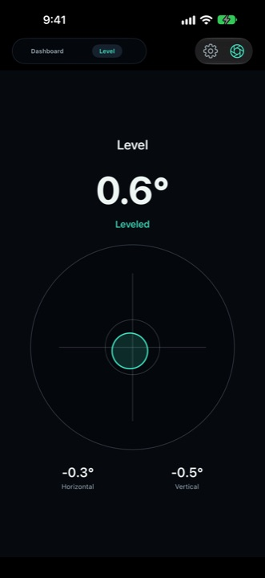
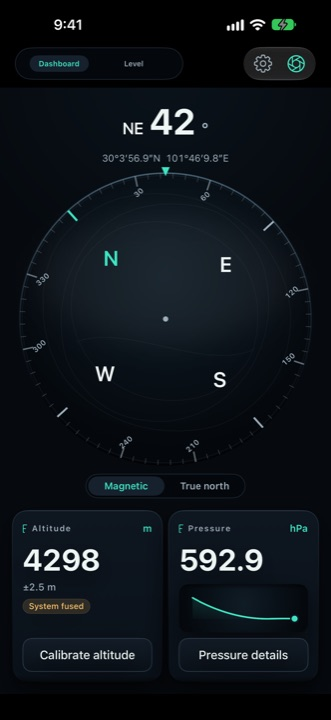
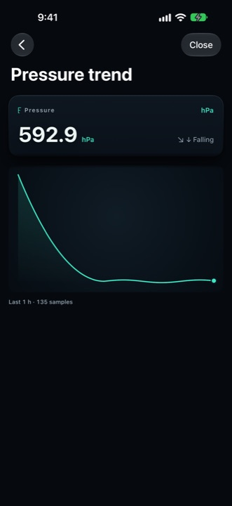

The four numbers you actually use
GPS and barometric altitude, a one-hour pressure trend, magnetic and true north, and a two-axis level. Two pages, no menu diving at 3,000 metres.
Outdoor dashboard · iPhone
Altitude, pressure, compass and level on a single dashboard. Every reading carries its error range and its source — and when a sensor can't be trusted, the app says so instead of inventing a number.
Pre-release · iOS 17+ · First TestFlight build in preparation
No account, no ads, no telemetry


Why only four readings
Altitude tells you where you are. Pressure tells you the weather is changing. A compass keeps you pointed. A level keeps the stove and the tent flat. PeakGo spends its screen on those four, not on another tab bar.
GPS and barometric altitude, a one-hour pressure trend, magnetic and true north, and a two-axis level. Two pages, no menu diving at 3,000 metres.
Set a known altitude and the barometer is anchored to it — not nudged until the number looks professional. When pressure really drops, the trend freezes instead of averaging the event away.
On a phone without a barometer or magnetometer, the card says what is missing and why. Everything else keeps working. No placeholder that looks like a reading.
On screen
The readings update in place. Units follow you: metres or feet, hPa, inHg or mmHg, decimal degrees or degrees and minutes.

What it won't do
PeakGo is a tool, not a service. It does not ask who you are, and it has nothing to sell you once you are inside.
Download
PeakGo is pre-release. The first build will go out through TestFlight, and the App Store listing follows a round of real-device testing. The button stays grey until there is something to install — we would rather do that than hand you a link that goes nowhere.
iOS 17+ · iPhone · free when it ships